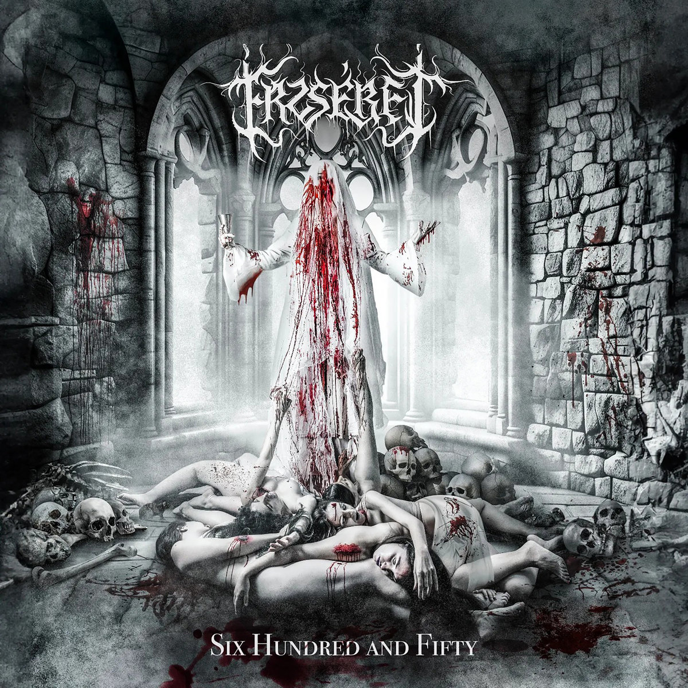
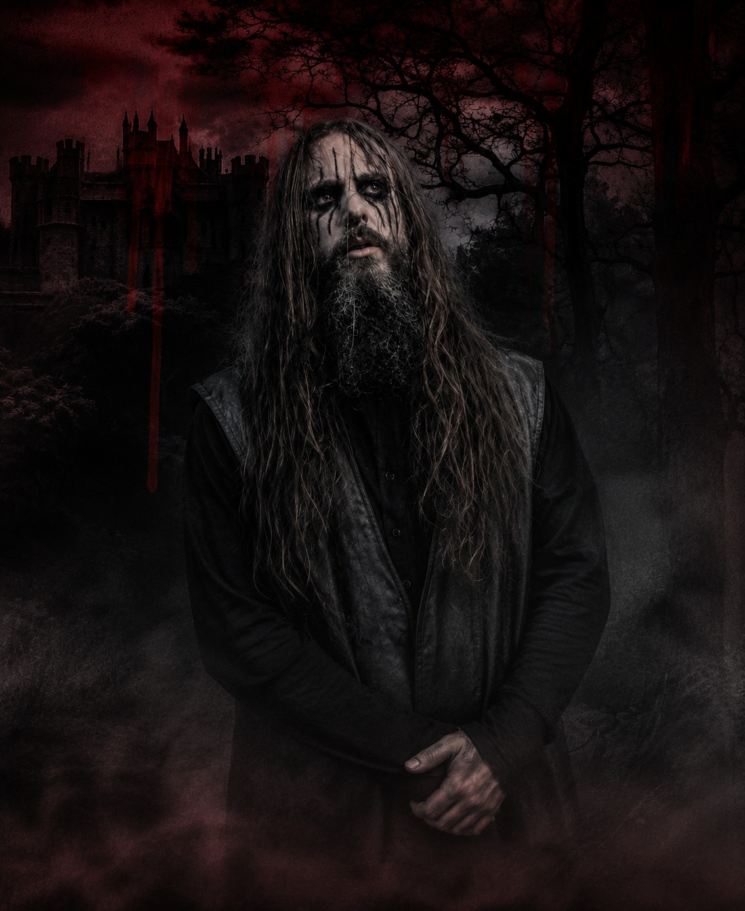
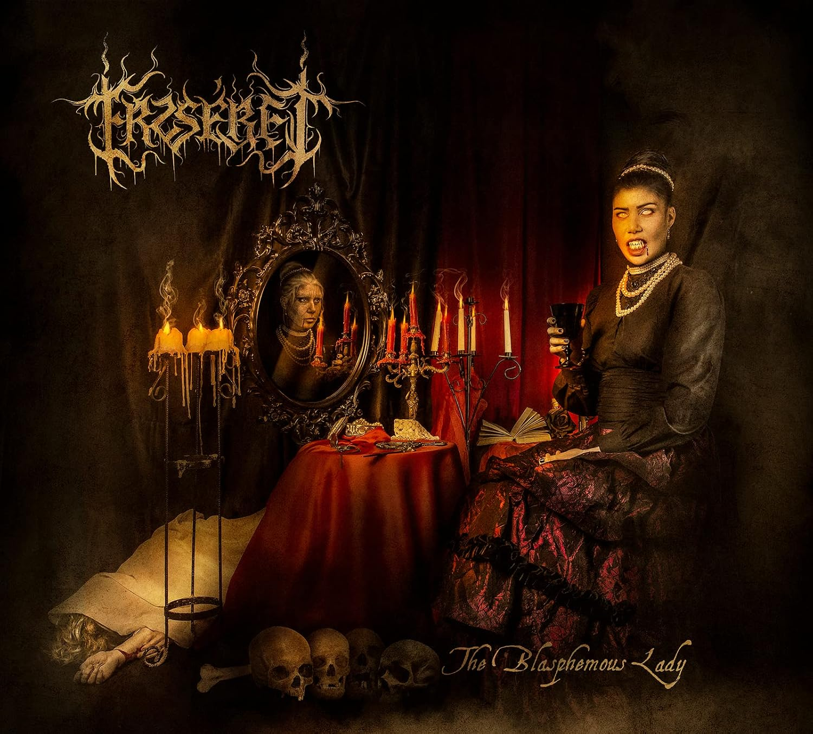

23 Aug 2026
Milagre Metaleiro Open Air
Portugal
Tickets
Symphonic Black Metal · Barcelona

Latest full-length
A conceptual work exploring the mythology surrounding Elisabeth Báthory through richer orchestral arrangements, atmospheric storytelling and uncompromising black metal intensity.
The album expands Erzsébet's cinematic identity while retaining the aggression and dramatic contrast established on The Blasphemous Lady.
Featuring Zoe Marie Federoff on “Domina Vestra”
Live History
The Band
Symphonic black metal from Barcelona
ERZSÉBET is a symphonic black metal band from Barcelona, Spain, formed in 2020. Inspired by the legend of Countess Erzsébet Báthory, the band merges ferocious black metal, cinematic orchestration and theatrical performance into a dark, immersive identity.
From the raw atmosphere of The Blasphemous Lady to the expanded conceptual scope of Six Hundred & Fifty, Erzsébet combines aggression, haunting melodies and symphonic grandeur with a strong visual narrative designed to live both on record and on stage.



Releases

The Blasphemous Lady introduced Erzsébet's dark artistic vision, blending relentless aggression, haunting melodies and symphonic grandeur.
Listen on SpotifySix Hundred & Fifty expands Erzsébet's vision into a full-length conceptual work built around the mythology surrounding Elisabeth Báthory.
Listen on SpotifyOfficial Merchandise
Official Erzsébet merchandise.
Apparel and exclusive items available through our official online store and at our live shows.
Professional
Press, booking and professional enquiries
Biography, official photographs, live information, videos and professional material for promoters, festivals, press and industry contacts.
Open Press / EPK